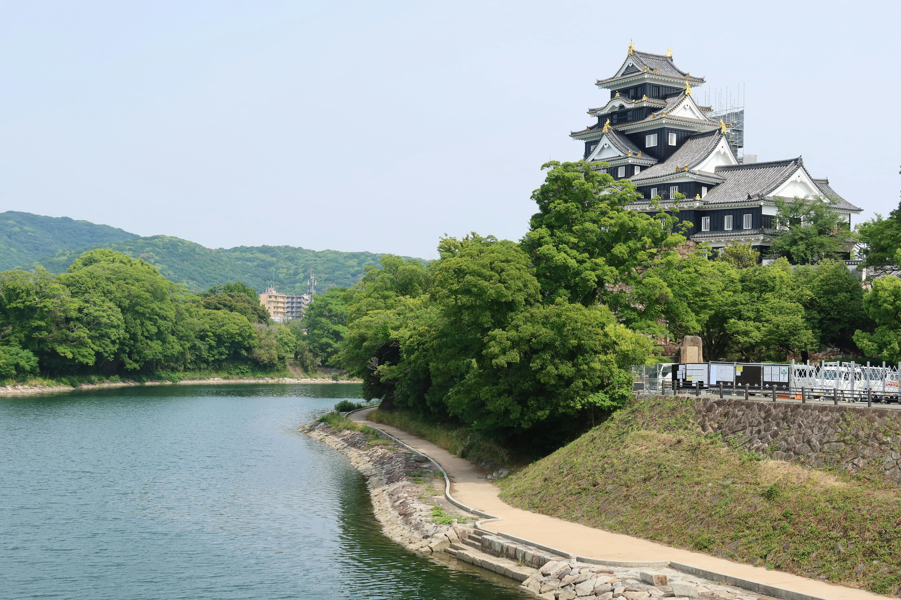

CONOCIENDO
JAPÓN
Donde la tradición se encuentra con el mañana. Explorar Japón es descubrir un mosaico de regiones, cada una con su propio sabor, propio arte y sus propios rituales.
Déjate envolver por un territorio donde lo ancestral y lo innovador no solo conviven, sino que crean algo totalmente único.
Tu viaje por el corazón del Sol Naciente comienza aquí.


DESCUBRÍ LOS DESTINOS MÁS VISITADOS
Algunos de los destinos más visitados reflejan la diversidad cultural del país, desde la innovación de Tokio hasta la tradición de Kioto y la historia de Hiroshima.

Monumento de la Paz
Hiroshima

Cruce de Shibuya
Tokio

Torre de Tsutenkaku
Kioto

Torre de Koyasu
Kyoto

Dotonbori
Osaka

Jardín de Koraku-en
Okayama
"Cada región japonesa revela una forma distinta de entender el tiempo, el espacio y la cultura"
Cultura en una palabra
KOMOREBI （木漏れ日）
La luz del sol que se filtra a través de las hojas de los árboles